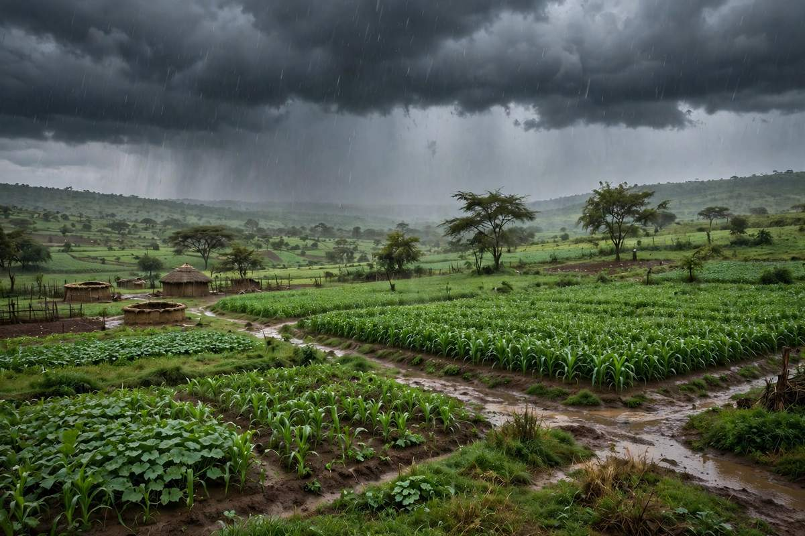

📍 Weather, Rain & Disease Alerts Near You
Know your season, report rain, and warn your neighbours.
Location not set. Allow GPS or choose a town to see your local season and nearby alerts.
Rain onset is a seasonal estimate for your latitude, not a live forecast. This site cannot fetch live weather, so check the Zambia Meteorological Department forecasts on radio, SMS or their website. Farmers' reports below are live.
🌧 Rain watch (reported by farmers)
🦠 Disease & pest alerts
Seen a disease or pest? Report it so neighbours can protect their crops and animals. Alerts use your GPS or chosen town. Not sure what it is? Try the problem solver.